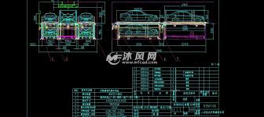

自我介绍

姓名：乔金严
年龄： 25岁
住处：未婚劲松地铁站附近
来自：江苏省宿迁市沭阳县
职务: 前端开发
工作年限：1年（16.11.30至今）
目前住址： 北京市东城区
爱好
游泳：喜欢蛙泳，能游200米
跑步：能跑3.6公里，时间在20分钟左右。最近跑过3次5公里，没有不适。
标签：
- 大学，生活委员
跑腿的，传话的 - 机械制图员
14年7月毕业后，在江苏溧阳一家机械厂做制图员，15年12月辞职，总共干了1.5年
收获：
会画二维机械图纸
 - 肯德基
16年初来北京，找工作不顺利，在肯德基干了3个月 - 前端开发培训班，班长
16年6月，在北京花钱报了个培训班，学习前端开发（写网页的），就是写代码的，培训了约半年。报名当了班长
成果：
有一张培训学员的全家福，我组织大家把照片上每个人标注上名字，方面以后相聚了还能记得对方的名字。
个人信条：
成长的过程是一个破碎重建的过程，成长伴随轻微痛苦，不冒险是最大的冒险。
个人技能
- 机械制图
会画一些机械方面的图纸 - 前端开发
写过电脑网站的前端部分的代码（前端的任务是写页面，后台的任务是处理数据提供接口，我会前端）
其他
- 个人博客
- 我的微信二维码